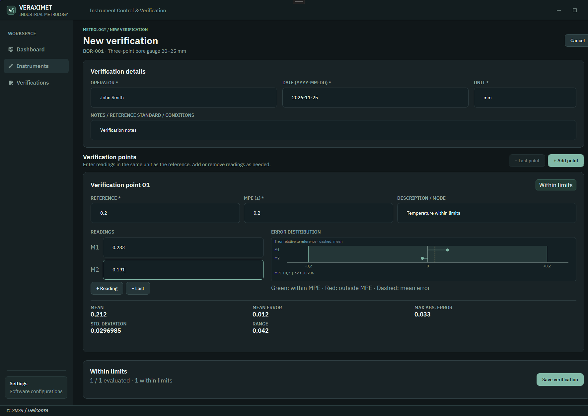
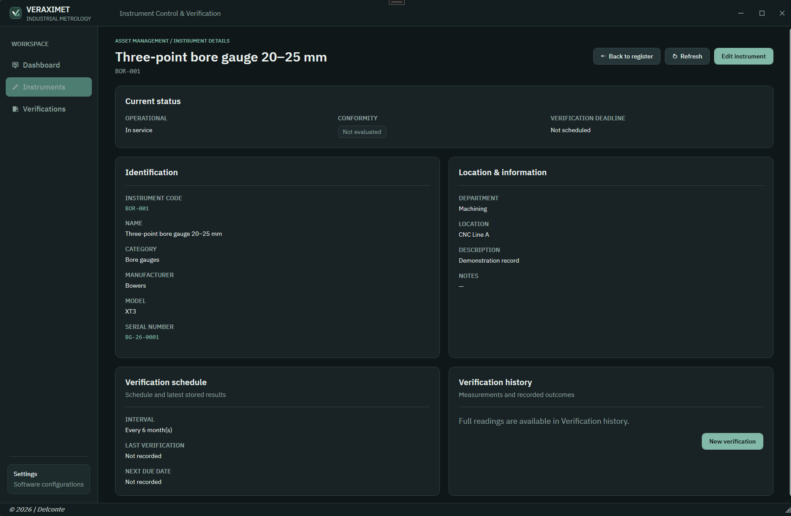
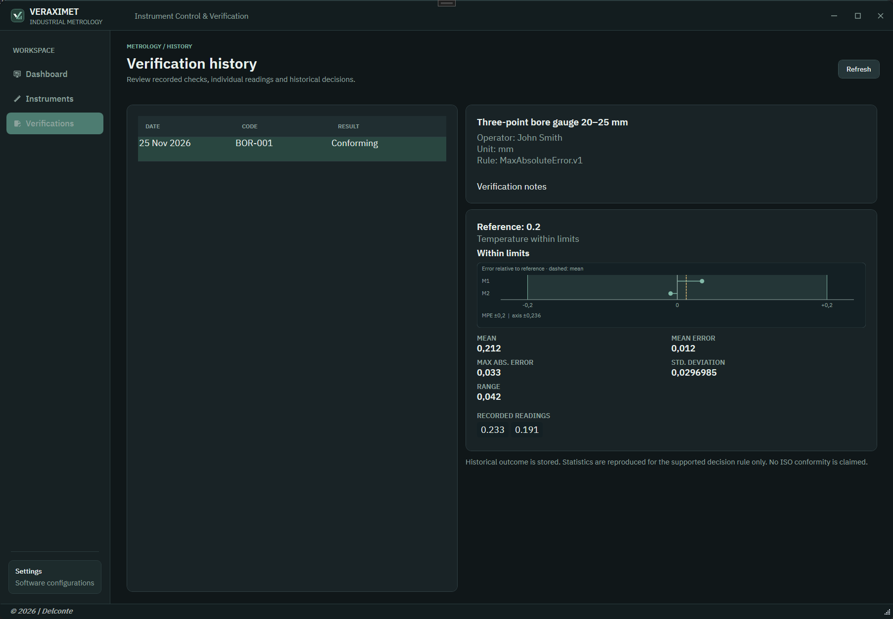

Scope and implementation status
Veraximet is designed to document and evaluate the performance of measurement instruments. The current source code, associated with the rule
MaxAbsoluteError.v1, performs basic verifications against MPE limits entered by the operator.
Repeated readings, mean error, maximum absolute error, range, standard deviation, binary comparison against MPE, history and scheduling.
Uncertainty budgets, guard-band rules, traceability, corrections, normative procedures, process capability and authorization for use.
Metrological foundations
| Operation | Meaning |
|---|---|
| Calibration | Establishes the relationship between reference values and indications, with their respective uncertainties; it is not equivalent to a conformity decision. |
| Verification | Provides evidence that specified requirements have been fulfilled. |
| Adjustment | Changes the instrument's response. Results before and after adjustment (as found / as left) must be distinguished. |
| Validation | Demonstrates that requirements and performance are adequate for the intended use. |
Error, uncertainty and repeatability are not synonymous. Error is a difference relative to a reference value; uncertainty quantifies the dispersion of values attributable to the measurand; repeatability concerns precision under defined conditions. A series of closely grouped readings can be systematically wrong.
The MPE limit ( maximum permissible error) is the maximum error permitted by an applicable specification. It is neither resolution, uncertainty nor workpiece tolerance. It may vary with the test point, measurement mode or range.
MaxAbsoluteError.v1 algorithm
The
VerificationCalculator.Calculate method takes a reference value, a non-negative MPE and at least one reading. The model uses a symmetric ±MPE limit for each point.
| Symbol | Meaning | Source field |
|---|---|---|
| r | Reference value |
referenceValue
|
| M | Maximum permissible error (non-negative magnitude) |
maximumPermissibleError
|
| x i | i-th indication |
measurements[i]
|
| n | Number of readings |
Count
|
3.1 Mean and indication errors
The mean (
Mean) is the central estimate of the readings. The mean error (
MeanError) retains its sign: positive if the instrument overestimates the reference, negative if it underestimates it. It is not necessarily a complete estimate of bias across the entire measurement range.
3.2 Maximum absolute error and range
MaximumAbsoluteError identifies the worst reading relative to the reference.
Range describes the difference between the extreme readings; it is not the instrument's nominal measuring range.
3.3 Sample standard deviation
The denominator is
n − 1, not
n. With only one reading,
StandardDeviation is
null, displayed as a dash; it is not zero. With identical readings and at least two observations, s = 0 describes only the observed dispersion, not the absence of uncertainty.
3.4 Point and overall verification decisions
Equality at the limit is accepted. A single reading outside the limit makes the point nonconforming even when the mean error is zero. Neither the range nor the standard deviation directly affects the decision.
An incomplete point is not evaluated and prevents the verification from being saved. A saved verification has an outcome of
Conforming or
Nonconforming.
NotEvaluated represents the absence of an evaluation, not an uncertain decision outcome. There is no
Indeterminate state.
3.5 Numerical precision and units
Values, MPE, mean, errors and range are calculated using
decimal. Squared deviations and standard deviation are calculated using
double. Comparison with MPE uses the numerical result rather than the rounded string displayed on screen. The UI accepts a comma or a period as a decimal separator, without thousands separators. The unit is a text field shared by the verification: automatic unit conversion is not implemented. All quantities for a point must therefore use consistent units.
Numerical example and plot interpretation
Consider a reference of 50.000 mm and an MPE of ±0.030 mm. The following data are illustrative examples, not actual calibration results.
| Reading | Indication [mm] | Error [mm] | Individual outcome |
|---|---|---|---|
| M1 | 49.960 | −0.040 | Outside limits |
| M2 | 50.000 | 0.000 | Within limits |
| M3 | 50.040 | +0.040 | Outside limits |
E max = 0.040 mm ; R = 0.080 mm
s = √[(0.040² + 0 + 0.040²)/2] = 0.040 mm
Point outcome: outside limits. The comparison 0.040 > 0.030 yields a negative outcome despite the zero mean error.
MeasurementPlot displays signed errors, the ±MPE band and the mean error line. The scale is symmetric and adapts to the greater of MPE and maximum absolute error.
Persistence and application responsibilities
| Component | Responsibility |
|---|---|
VerificationPointVM
|
Collects readings, validates numerical fields and invokes the calculator to preview results. |
VerificationCalculator
|
Calculates statistics and applies the rule, without dependencies on WPF or SQLite. |
VerificationEditorVM
|
Manages points, summarizes the outcome and prepares the save request. |
VerificationService
|
Validates the request, recalculates the outcome from raw data, saves the verification and updates the instrument. |
Instrument
|
Manages operational status, latest outcome, last verification and due date. |
The database stores the instrument identifier, date, operator, unit, notes, decision rule and overall outcome. For each point it records the reference, MPE, description, order and original readings. Derived statistics are not stored as separate fields: they can be reconstructed from the original data using the same algorithm version.
Scheduling and operational status
A nonconforming outcome clears the next due date (null). A verification dated earlier than the latest recorded verification is rejected. Schedule status is
NotScheduled if no date is set,
Overdue if before today,
DueSoon if between today and the next 30 days by default, otherwise
Valid.
Operational status (
InService,
Suspended,
Archived) is separate from the conformity outcome. Archived instruments cannot be verified; a negative outcome does not automatically suspend the instrument. Authorization management and any restrictions on manufacturing use remain to be implemented.


Evaluation and propagation of uncertainty
The reference model is the GUM (JCGM 100). Uncertainty is not the same as the observed error and cannot be inferred from dispersion alone. For a result y = f(x₁, …, xₘ), the input quantities, their standard uncertainties, any correlations and the physical model are identified.
6.1 Type A evaluation
This relationship applies to the mean of n independent observations under defined conditions. If the manufacturing process uses a single reading, the repeatability contribution must instead be estimated for that reading (for example, s). Increasing the number of observations does not eliminate bias, drift or correlated effects.
6.2 Type B evaluation
The evaluation is based on certificates, specifications, physical models and other available information. Type A and Type B identify the evaluation method, not a distinction between random and systematic errors.
| Available information | Model | Standard uncertainty |
|---|---|---|
| Certificate: expanded uncertainty U and factor k | According to the certificate | U / k |
| Limit ±a | Rectangular | a / √3 |
| Limit ±a | Symmetric triangular | a / √6 |
| Resolution q, rounding to the nearest increment | Rectangular ±q/2 | q / √12 |
The distribution must be justified. Resolution and repeatability must not be added indiscriminately when both represent the same experimental effect.
6.3 GUM law of propagation of uncertainty
Covariance can be expressed as ρ iju iu j, where ρ is the correlation coefficient. Under the linear approximation and for uncorrelated inputs:
| Model | Combined uncertainty for uncorrelated inputs |
|---|---|
| y = a ± b | √(u a² + u b²) |
| y = ab | √(b²u a² + a²u b²) |
| y = a/b, b ≠ 0 | √[(u a/b)² + (au b/b²)²] |
For strongly nonlinear models or distributions that are not adequately described by linearization, propagation of distributions using Monte Carlo methods can be considered (JCGM 101).
6.4 Expanded uncertainty and coverage
k = 2 corresponds to approximately 95% coverage only under appropriate assumptions of normality and adequate knowledge of u c. For independent contributions with finite degrees of freedom, the Welch–Satterthwaite formula can be used to estimate the effective degrees of freedom:
Where appropriate, k is determined from Student's t-distribution for the required coverage level. Automatic estimation is not provided by the current engine.
6.5 Illustrative verification uncertainty budget
Reference: 20.000 mm; readings: 20.12, 20.12, 20.13, 20.11, 20.12 mm. The mean is 20.120 mm, the mean error is +0.120 mm and the sample standard deviation is 0.007071 mm. Contributions are assumed to be uncorrelated and non-overlapping, with residual effects already expressed in mm.
| Component | Calculation | u [mm] |
|---|---|---|
| Reference standard | 0.004 / 2 | 0.002000 |
| Repeatability of the mean | 0.007071 / √5 | 0.003162 |
| Resolution | 0.01 / √12 | 0.002887 |
| Residual thermal effect | Hypothetical estimate | 0.002000 |
| Combined | Root-sum-of-squares | 0.005132 |
| Expanded | k = 2, illustrative | 0.010264 |
The physical model may include thermal, geometric, alignment and contact effects. For a length L and a coefficient of thermal expansion α, ΔL ≈ LαΔT. In the simplified case where temperature is the only uncertain input, u L = |Lα|u T. In an actual verification, expansion of both the instrument and the reference must also be considered.
Decision rules and conformity
The decision must refer to an identifiable specification and a stated decision rule. ISO 14253-1, ISO/IEC 17025 and JCGM 106 provide references for defining the model; the following criteria are examples of configurable rules, not a complete reproduction of normative requirements.
7.1 Symmetric rule with guard band U
For an error estimate e with expanded uncertainty U and limits ±M, one possible conservative three-outcome rule is:
| Outcome | Criterion |
|---|---|
| Conformity demonstrated | |e| + U ≤ M |
| Nonconformity demonstrated | |e| − U > M |
| Indeterminate | Otherwise |
Under this rule, conformity is demonstrated when the interval e ± U is contained within the specification; nonconformity is demonstrated when it lies entirely outside. A probability of false acceptance is not automatically assigned from the value of U alone.
7.2 Asymmetric specifications
LSL and USL are the lower and upper specification limits, w L and w U are the guard bands. For w L = w U = U, nonconformity is demonstrated if y + U < LSL or y − U > USL. One-sided limits and different guard bands require a rule consistent with the applicable risk and contract. An empty acceptance zone must be handled explicitly.
7.3 Future aggregation of outcomes
Overall conformity will require all mandatory characteristics to be evaluated and conforming. Demonstrated nonconformity of a mandatory characteristic results in a negative outcome; missing or indeterminate data prevent a positive declaration. The outcomes not evaluated and indeterminate must remain distinct.
Suitability for use and process capability
An instrument may fail to meet the manufacturer's specifications but remain usable in a restricted process, provided the requirements permit it, the correction and residual uncertainty are validated, and the use is authorized. Conversely, a conforming instrument may be unsuitable for an excessively tight manufacturing tolerance.
8.1 Correction of systematic error
A correction estimated at one point is not automatically applicable elsewhere. Measurement mode, interval, conditions, stability, any interpolation and correction uncertainty must be documented.
8.2 Ratio of uncertainty to tolerance
MS denotes the measurement system, MP the complete measurement process, including the effects of operators, workpieces, environment, method and stability. U is the expanded uncertainty; 2U is the interval width. Thresholds of 15% for Q MS and 30% for Q MP are indicative industrial references that must be confirmed for the applicable procedure and edition of the standard. They are neither universal nor currently implemented limits.
8.3 Case study: out-of-specification caliper
Using the budget from §6.5, with MPE = 0.030 mm, the mean error is +0.120 mm and the maximum absolute error is 0.130 mm. The current algorithm returns a nonconforming outcome. The guard-band rule with U applied to the mean also demonstrates nonconformity: 0.120 − 0.010264 > 0.030 mm.
Assume further tests demonstrate local error stability and the applicability of a −0.120 mm correction. An illustrative manufacturing measurement process budget for a single reading, assuming independent and non-overlapping contributions, is shown below:
| Component | u [mm] |
|---|---|
| Correction estimate | 0.005132 |
| Single-reading repeatability | 0.007071 |
| Operator | 0.010000 |
| Operating temperature | 0.005000 |
| Drift | 0.005000 |
Q MP ≈ 6.02%
Potentially suitable under an illustrative 30% threshold.
Q MP ≈ 60.18%
Unsuitable under the same threshold.
For process A, a dimension of 20.00 ± 0.50 mm with a guard band equal to U MP would yield an acceptance interval of 19.53009–20.46991 mm for the corrected measurement. The nominal tolerance remains 19.50–20.50 mm.
8.4 MSA and Gage R&R
EV represents repeatability and AV reproducibility. ANOVA studies may require a workpiece–operator interaction contribution. The industrial thresholds of 10% and 30% are indicative references and do not replace assessment of bias, linearity, stability and traceability. The standard deviation currently calculated for a point is not equivalent to a Gage R&R study.
Edge cases, tests and future development
These cases are test vectors derived from the current rule, not results of executed automated tests. All readings and limits are expressed in the same unit.
| r | MPE | Readings | Expected outcome |
|---|---|---|---|
| 10 | 0.03 | 9.97; 10.03 | Conforming (equality included) |
| 10 | 0.03 | 9.96; 10.04 | Nonconforming, mean 10 |
| 10 | 0.03 | 10.02 | Conforming, s undefined |
| 10 | 0.03 | 10.04; 10.04 | Nonconforming, s = 0 |
| 10 | 0 | 10; 10 | Conforming |
| 10 | 0 | 10.001 | Nonconforming |
| 10 | −0.01 | 10 | Input rejected |
| 10 | 0.03 | None | Input rejected |
Future metrological validation
- Retain identifiers, certificates and traceability of reference standards, environmental conditions, method and applicable specification.
- Version procedures for each instrument family (for example, calipers: external, internal, depth and step measurements).
- Implement uncertainty budgets with contributions, distributions, sensitivity coefficients, correlations and coverage factors; do not treat missing data as zero.
- Retain decision rules, outcomes for each characteristic and original data to reproduce historical assessments.
- Separate metrological conformity, process suitability and operational status; record authorizations, corrections and restrictions on use.
- Manage interventions, as-found/as-left conditions, drift, review of verification intervals and impact on previous measurements.
The project has undergone static review. WPF builds and runtime tests require the actual .NET/Beautify environment; metrological validation additionally requires reference cases, applicable normative texts and experimental verification.
References and source code
The following references define the working framework. Before adopting a formal procedure, check the applicable edition, contractual requirements and full text. This document does not certify conformity to these standards.
| Reference | Scope |
|---|---|
| JCGM 200 (VIM) | International Vocabulary of Metrology. |
| JCGM 100 (GUM) | Evaluation and propagation of uncertainty. |
| JCGM 101 and JCGM 106 | Monte Carlo and uncertainty in conformity assessment. |
| ISO 10012 / ISO 9001 | Measurement management and quality management systems. |
| ISO/IEC 17025 | Laboratory competence, traceability and statements of conformity. |
| ISO 14253-1 | Decision rules for GPS products and measuring equipment. |
| ISO 22514-7 | Capability of measurement processes and systems. |
| ISO 13385-1 | Metrological characteristics of calipers. |
| Global ACI / ILAC guidance | Application guidance on uncertainty and conformity decisions. |
Source code references
- Veraximet.Metrology/VerificationCalculator.cs
- Veraximet.Metrology/VerificationPointResult.cs
- Veraximet.Infrastructure/Services/VerificationService.cs
- Veraximet.Domain/Entitys/Instrument.cs
- VerificationPointVM.cs and MeasurementPlot.cs
Source code links are relative to the repository root.